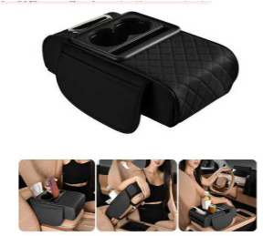

Cotieră Auto Universală pentru Consola Centrală
Cotieră auto universală cu suport pentru pahare, șervețele și compartiment pentru obiecte mici, cu finisaj negru capitonat.
Prețul și stocul sunt afișate conform catalogului. Confirmă disponibilitatea, cantitatea și condițiile comerciale înainte de comandă.
DETALII PRODUS
Descriere
Cotiera auto universală pentru consola centrală este un accesoriu multifuncțional conceput pentru îmbunătățirea confortului și organizării spațiului din interiorul autovehiculului. Produsul combină o suprafață de sprijin pentru braț cu un suport integrat pentru pahare, un compartiment pentru șervețele și un spațiu suplimentar destinat depozitării obiectelor de mici dimensiuni.
Designul compact, cu finisaj din piele ecologică neagră și cusături decorative în formă de romb, permite integrarea accesoriului în diferite configurații de interior auto, oferind un aspect elegant și funcțional.
Cotiera este concepută pentru poziționarea peste cotiera centrală existentă, fără a necesita înlocuirea completă a acesteia, cu condiția verificării compatibilității dimensionale.
1. Trei funcționalități integrate într-un singur accesoriu
Principalul avantaj al produsului este combinarea mai multor funcții practice într-o structură compactă, destinată utilizării în zona consolei centrale a autovehiculului.
Partea superioară este prevăzută cu un modul organizator care include:
- Suport pentru pahare: compartiment circular destinat poziționării recipientelor compatibile.
- Suport pentru șervețele: deschidere specială pentru accesarea șervețelelor în timpul deplasărilor.
- Spațiu de depozitare: compartiment îngust pentru obiecte de mici dimensiuni, precum telefonul sau alte accesorii compatibile.
Această configurație facilitează organizarea obiectelor utilizate frecvent și permite păstrarea acestora într-o zonă accesibilă pentru ocupanții vehiculului.
2. Suprafață de sprijin pentru confortul brațului
Cotiera dispune de o suprafață superioară cu aspect capitonat, concepută pentru a oferi un punct de sprijin suplimentar în zona centrală dintre scaune.
Forma sa permite utilizarea ca extensie a cotierei existente, în funcție de dimensiunile și configurația habitaclului.
Materialul exterior prezintă un finisaj neted, cu cusături decorative, contribuind la un aspect uniform și la integrarea vizuală alături de tapițeriile auto.
Construcția poate fi utilă pentru persoanele care preferă o suprafață de sprijin mai înaltă sau un accesoriu care combină confortul cu organizarea spațiului interior.
3. Design elegant cu finisaj din piele ecologică
Aspectul exterior este caracterizat de o suprafață neagră, cu textură și cusături în model geometric tip romb, inspirată din designul accesoriilor auto premium.
Finisajul permite asortarea cu interioare auto în nuanțe de negru, gri, bej sau maro.
Elementele laterale sunt realizate într-un stil simplu, cu suprafețe uniforme, în timp ce partea superioară prezintă un model capitonat decorativ.
Această combinație oferă un echilibru între aspectul estetic și funcționalitatea practică.
Avantaje constructive:
- Design modern, cu finisaj negru.
- Suprafață exterioară din material cu aspect de piele.
- Cusături decorative geometrice.
- Modul organizator integrat.
- Formă adaptată amplasării pe cotiera centrală.
- Structură compactă pentru utilizare în habitaclu.
4. Montare peste cotiera centrală existentă
Accesoriul este proiectat pentru fixarea peste cotiera centrală a autovehiculului, utilizând elementele de prindere integrate în construcție.
Configurația ilustrată permite poziționarea produsului pe partea superioară a cotierei existente, fără intervenții permanente asupra structurii interioare a vehiculului.
Designul urmărește menținerea accesului la mecanismul de deschidere al cotierei originale, acolo unde forma și dimensiunile acestuia permit.
Înainte de montare, trebuie verificată compatibilitatea cu lățimea, lungimea și sistemul de deschidere al cotierei existente.
Denumirea universală indică o utilizare posibilă pe mai multe modele auto, nu compatibilitatea garantată cu toate vehiculele.
5. Organizare practică pentru călătorii și deplasări zilnice
Cotiera poate fi utilizată pentru organizarea obiectelor personale în interiorul autovehiculului, contribuind la menținerea unui spațiu central mai ordonat.
În deplasările urbane
Suportul pentru șervețele și compartimentele de depozitare permit accesarea rapidă a anumitor obiecte utilizate frecvent.
În călătoriile lungi
Suprafața de sprijin pentru braț și organizatorul superior pot contribui la un plus de confort și funcționalitate.
Pentru transportul obiectelor mici
Compartimentele integrate permit păstrarea unor accesorii personale într-o zonă delimitată, în funcție de dimensiunile acestora.
Pentru personalizarea interiorului
Finisajul din piele ecologică și cusăturile decorative permit completarea aspectului consolei centrale cu un accesoriu funcțional.
6. Caracteristici tehnice și specificații
- Tip produs: cotieră auto universală pentru consola centrală.
- Categorie: accesorii auto pentru interior.
- Destinație: confort și organizare în habitaclu.
- Poziționare: peste cotiera centrală existentă.
- Funcție principală: sprijin pentru braț și organizare.
- Material exterior: piele ecologică, conform aspectului prezentat.
- Culoare: negru.
- Model suprafață: cusături decorative tip romb.
- Structură: suprafață capitonată cu modul organizator.
- Suport pentru pahare: integrat.
- Suport pentru șervețele: integrat.
- Compartiment pentru obiecte mici: integrat.
- Sistem de fixare: elemente de prindere pentru cotiera existentă.
- Montaj: fără înlocuirea cotierei originale, în funcție de compatibilitate.
- Design: ergonomic, multifuncțional.
- Utilizare: autoturisme cu cotieră centrală compatibilă.
- Întreținere: curățare delicată cu materiale adecvate suprafețelor din piele ecologică.
- Alimentare electrică: nu necesită.
- Caracter reutilizabil: concepută pentru utilizări repetate.
- Compatibilitate: de verificat în funcție de dimensiunile cotierei și configurația vehiculului.
Comandă și informații
Site-ul funcționează ca un catalog B2B. Nu există plată online sau coș de cumpărături. Stoc declarat: 0 buc. Confirmă disponibilitatea înainte de comandă.
Discută pe WhatsApp →DIN ACEEAȘI CATEGORIE